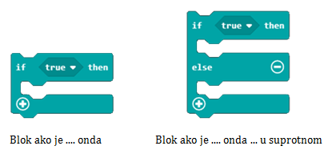
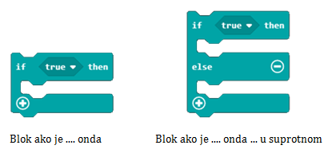
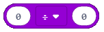

Работа с блокове от категория Logic¶
Програмите, които създадохме досега бяха изпълнени блок по блок, от първия до последния. Този процес на изграждане на програма се нарича последователен или линеен. В него е невъзможно да пропуснеш блок.
Всички блокове в  се изпълняват веднъж, а тези в
се изпълняват веднъж, а тези в  множество пъти.
множество пъти.
Но може да се наложи да промените начина, по който програмата се изпълнява.
Например, ако създавате програма, която ще се използва от по-млади ученици за изучаване на изчисления, може да искате да включите конкретни блокове, които да предлагат правилния отговор, или може да искате да използвате напълно различни блокове, които да осигуряват коментариза неправилните отговори.
Основавайки се на верен или грешен отговор би означавало, че може да се наложи да използваме различни комбинации от блокове. Затова програмата се разклонява, изпълнявайки една посочена поредност от блокове за сметка на друга.
Във всекидневието си всеки от вас взима решения и продължава деня си, базирайки се на тях. Например, температурата в класната стая е 30 градуса по Целзий и искате да вклюючите климатика. Следващата ви стъпка би била да проверите температурата в стаята и да решите дали да пуснете климатика.
Същото е и с програмирането.
С оглед на взимането на решения, MakeCode предлага:
Сравнителни оператори
Блокове за взимане на решения (условни блокове, които разклоняват програмата)
 

Използвайки сравнителен оператор, можете да сравнявате стойности и да установите дали едната е по-голяма/малка от другата или двете са равни. Резултатът може да бъде TRUE или FALSE.
- Като резултат от задействането на блок А, програмата ще покаже стойността на температурата в стаята.
- Грешен отговор!
- Задействането на А и Б ще има енакъв резултат-програмата ще впише температурата на стаята.
- Браво!
- Като резултат от задействането на блок В, програмата ще покаже малък кръст.
- Грешен отговор!
Q-8: Температурата в стаята е 28 градуса по Целзий. Анализирайте блоковете на фигурата и отбележете вярното твърдение.

Хайде да напришем малко програми!
Ако случайно избрано число от, 0 до 100, е четно, трябва да въведете текста „Числото е четно.“, а ако е нечетно-„Числото е нечетно.“
Кога числото е четно и кога-нечетно? Ако използваме цяло деление и разделим на числото 2 и няма остатък, то числото е четно. Ако остане остатък 1, то числото е нечетно.
Например, ако чрез цяло деление разделим 10 на 2, резултатът би бил 5, защото 2*5=10. Ако разделим 9 на 2, ще получим 4и остатък 1, защото 4*2=8. Така можем да заключим, че ако дадено число, разделено чрез цяло деление, няма остатък, то числото е четно, а ако има остатък-то е нечетно.
В MakeCode можем да използваме цяло деление чрез операцията , и остатъка чрез блока  , което осигурява стойност за остатъка.
, което осигурява стойност за остатъка.
Основавайки се на предишния урок, ще дефинираме промеливата Number, която съхранява стойностите, добити на чрез блока  , или по-точно, променливата
, или по-точно, променливата Number ще получи стойност на случаен принцип в интервала от 1 до 100.
Следващата стъпка би била да проверим дали има остатък в цялото деление на числото на 2. Ако е вярно, че няма остатък, тогава съобщението „Числото е четно.“ ще се покаже. Иначе, ако условието не е изпълнено и има остатък, тогава ще се появи съобщението „Числото е нечетно.“
Преди да проверим условието, ще трябва да създадем променливата Remainder, и да въведем стойности за цяло деление на Number и number 2:

Сега, следващата стъпка би била да проверим дали числото е нечетно или не. Това ще стане чрез представянето на блока if....then... else и сравнителен оператор. Ако променливата Остатък е 0, то числото е четно и ще се покаже съобщението „Числото е четно“. Иначе, ако остатъкът не е 0, то числото е нечетно и трябва да се покаже съобщението „Числото е нечетно.“

Крайният резултат:

Можете да видите кода в този линк: https://makecode.microbit.org/_WDmbuk3kKXW5
За да тестваме програмата, ще използваме симулатора, натискайки бутона  .
.
Задача: Създайте програма, която симулира хвърляне на зарове. Ако резултатът от хвърлянето (движение, разтрисане е отчетено) е 1, то това число да бъде представено от 1 точка; ако резултатът е 2-от 2 точки и т.н.
Сравнете решението си с нашето: https://makecode.microbit.org/_HsxKqAC90d5m
Допълнение: Можете да използвате логически оператори за свързване на условия.
В MakeCode логическите оператори са представени, както следва:
 - свързва две условия и дава отговор True само ако и двете са верни.
- свързва две условия и дава отговор True само ако и двете са верни.
 - свързва две условия и дава отговор True ако резултатът на поне едно от тях е верен.
- свързва две условия и дава отговор True ако резултатът на поне едно от тях е верен.
 - се поставя пред едно условие, дава отговор True ако условието не е изпълнено.
- се поставя пред едно условие, дава отговор True ако условието не е изпълнено.
Условието за проверка, че измерената температура е по-висока от 28, а светлинната наситеност е по-висока от 150, се проверява чрез този блок: